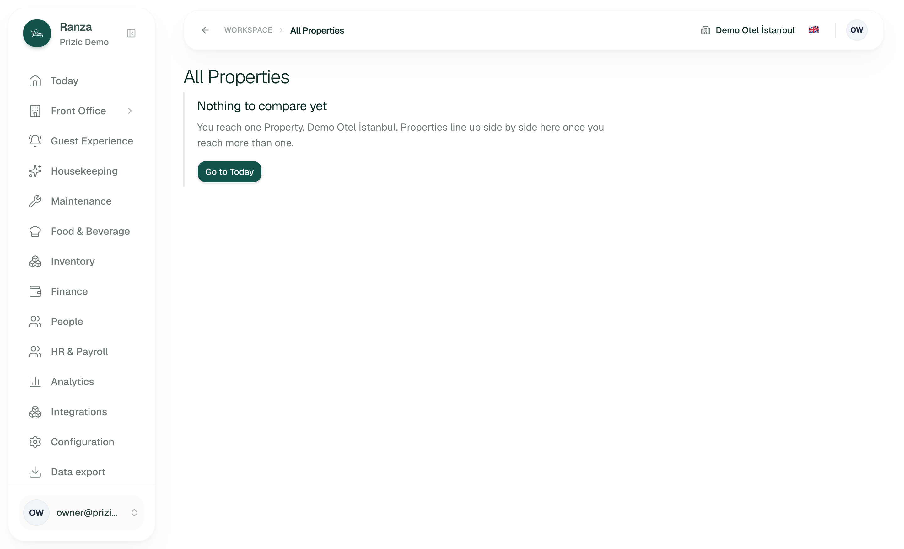
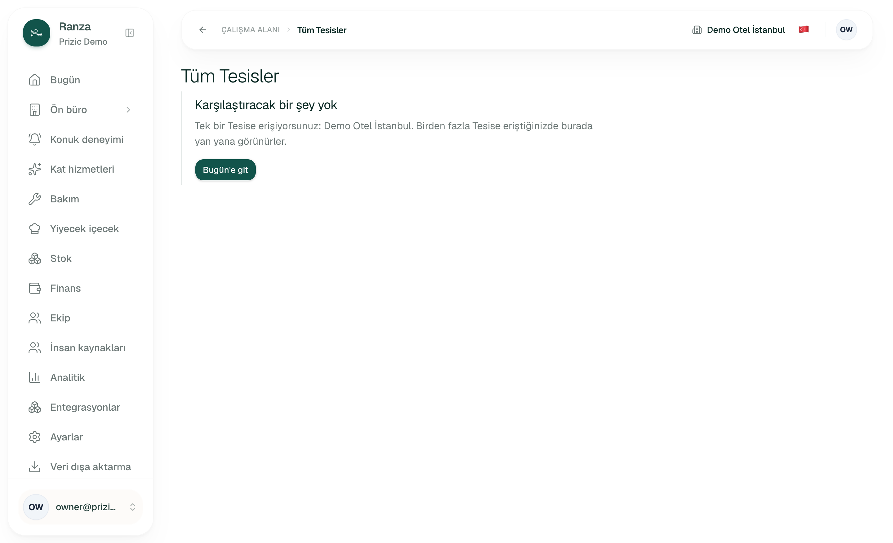
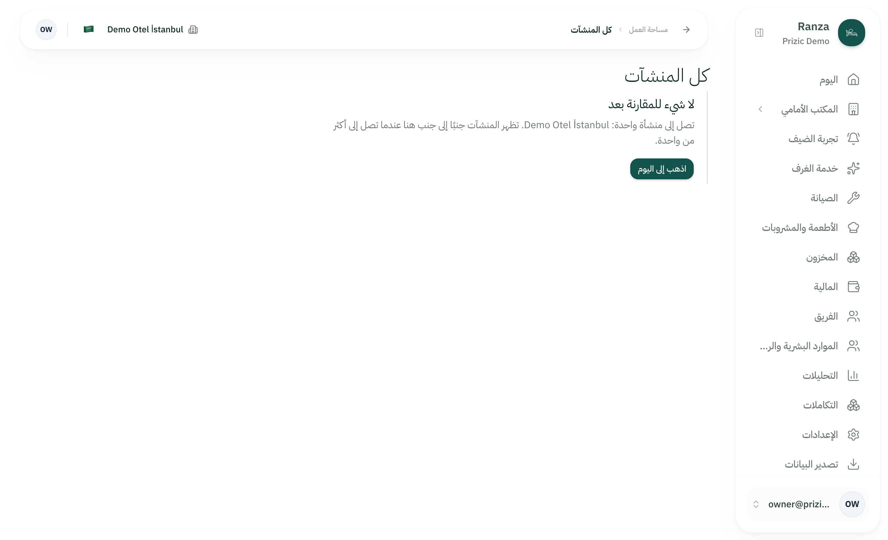
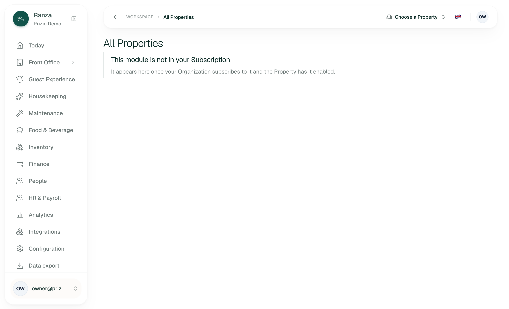
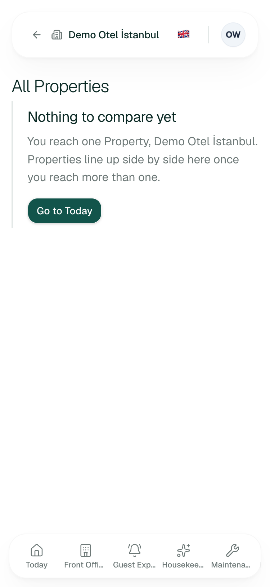
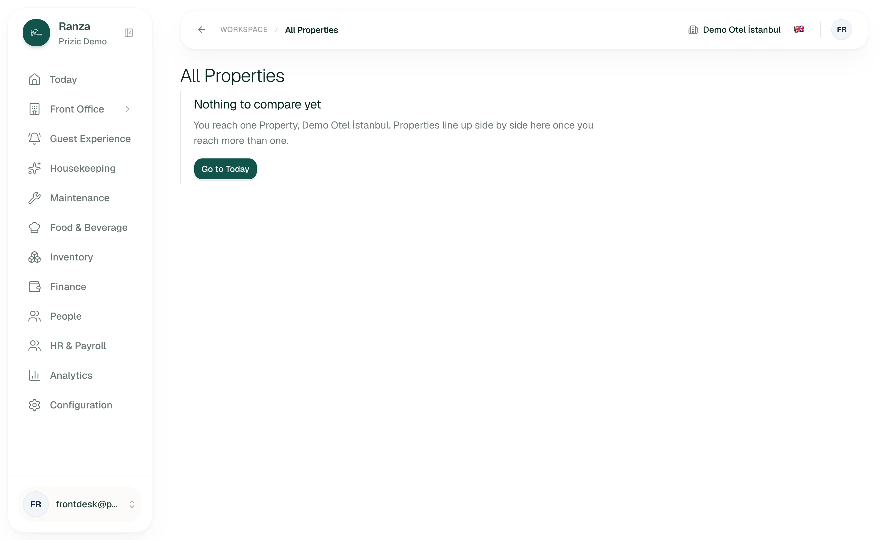

Route /en/portfolio · Staging ranza.46-225-168-54.nip.io (code identical to main 4b15c30 per the brief) · 2026-10-11 · Persona: a multi-hotel owner comparing Properties each morning · Mode: audit only, nothing was submitted or changed.
?property= shows “This module is not in your Subscription”, which is the wrong reason (PORTFOLIO-03).| ID | Severity | Where | What happened | What I expected | Suggested fix | Effort | Evidence | Status |
|---|---|---|---|---|---|---|---|---|
| PORTFOLIO-01 | slows me down | /portfolio, Owner/Manager with 2+ Properties (populated) |
Cards are rendered in the order the read returns them: name, then id (derive.ts, portfolio-view.tsx, PF-S1-27). No sort control, no rank, no “behind” marker. Each card leads with a raw count (“10 / 20”); the percentage is a 12px caption and the bar is 6px high. Summary tiles say nothing about the spread between Properties. |
To spot the Property that is behind in under five seconds: sort by occupancy share, money owed, open maintenance or arrivals still to come, and the share shown as the large figure. | Add a sort control (default stays name), make the share the headline figure with the count beneath, and optionally mark the lowest and highest in each metric. Needs a design decision on what “behind” means; do not invent targets. | M | Code only: features/portfolio/components/*.tsx |
inferred |
| PORTFOLIO-02 | causes errors | /portfolio, any viewer where money is hidden at some Properties but not others |
The Money owed summary tile is built without a coverage prop (summary-stats.tsx, second SummaryCard). balancesOf() in server/portfolio.ts skips null balances, so a Property with billing off drops out of the sum silently. The occupancy and maintenance tiles do print “Counted at x of y Properties”; the money tile does not. The page-level amber notice fires only when every entitled Property hides money (moneyHidden). |
The same guard as the other two tiles. derive.ts states the rule itself: “a sum over fewer Properties than are listed, shown without that, would be an understatement that reads as a fact.” |
Compute money coverage (Properties with a non-null balance vs listed) per currency or overall and pass it to the tile. | S | Code only | inferred |
| PORTFOLIO-03 | slows me down | /en/portfolio?property=00000000-0000-0000-0000-000000000000, Owner, any data state |
An unknown or no-longer-reached Property id (a stale bookmark, a Property unassigned since) shows the heading “This module is not in your Subscription” and “It appears here once your Organization subscribes to it and the Property has it enabled.” The URL is left unchanged, the Property button reads “Properties” (the switcher still lists the real one), and every rail link and the back button carry the bogus id forward (verified in the accessibility snapshot). | A message that says the Property in the link is not available to me and offers my real Property. The edge-case rows PF-S2-04 and PF-S2-15 call this “the not-available state” and the page reuses the Subscription copy for it. | Give the page its own not-available copy, or drop an unreached ?property= and fall back to the viewer’s first Property as Today does. The Subscription wording is right only when no reached Property has Analytics. |
S | 04-owner-forged-property.png; reproduced Y (twice, in two page loads) |
verified |
| PORTFOLIO-04 | slows me down | /portfolio, 2+ Properties (populated) |
The only action on a card is “Open <Property>”, a plain link to Today at that Property (open-property.tsx). The figures are text, not links: “Arrivals still to come: 5”, “Open maintenance: 7” and “Money owed” cannot be clicked to the list behind them. |
When a figure looks wrong I click it and land on that list for that Property (arrivals, maintenance, finance). | Make each figure a link to its destination with ?property= set, using the same remember-then-full-load behaviour. Keep “Open” for Today. Note a destination may be switched off at that Property; Today already handles that fallback. |
M | Code only | inferred |
| PORTFOLIO-05 | slows me down | /portfolio, 2+ Properties, esp. different time zones |
The page is one server read with no refresh control and no polling (it is not a live screen). The stamp reads “Figures as of {time}” with a time only, in the working Property’s zone (page.tsx, formatTime). Each card shows its own business date, so a tab left open overnight shows yesterday’s figures with a plausible time-of-day and no date. |
A date with the time, and a way to refresh without reloading the browser. This matters for an owner who keeps the tab open all day. | Show date and time in the stamp, add a refresh button (router refresh), and say which time zone the time is in when the Properties differ. | S | Code only | inferred |
| PORTFOLIO-06 | slows me down | /portfolio, 12 Properties and more (large) |
Cards are 3 across at xl, 2 across at md, one column below (portfolio-view.tsx); the loading skeleton gives a card a height of 288px. Twelve cards is about four rows plus the summary row, so more than one screen on a 900px-high laptop and the summary scrolls away. No search, filter or compact (table) mode. Above 200 reached Properties the whole page is replaced by “Too many Properties to compare” with no way to narrow the set (PF-S1-28, deliberate). |
With a dozen Properties, a dense table or a compact card that fits all twelve in one screen, and a filter to get under the ceiling. | Offer a compact table view with sortable columns (pairs with PORTFOLIO-01). For the ceiling, a filter by region/group once Properties have one; today there is nothing to filter by. | M | Code and loading skeleton only; card height is from the skeleton, not measured | inferred |
| PORTFOLIO-07 | polish | /portfolio, all roles; one-Property view verified, populated copy from messages.ts |
(a) The one-Property message says “You reach one Property”. “Reach” is system language; an Owner means “you have one Property”. It also does not say who can add or assign another. (b) The summary tile is called “Occupancy across Properties” but each card labels the same measure “Units in use”. (c) “Folio” is capitalised mid-sentence in “Open Folio balances”; that is the product vocabulary, but this persona may call it a bill or an account. | One name per measure across the tile and the cards; plain wording for the owner. | Use “Occupancy” on both, reword to “You have one Property: …”, and name who can add a Property (if that is a built feature). | S | 01-owner-desktop.png for (a); (b) and (c) from messages.ts |
verified (a); inferred (b, c) |
Counts: causes errors 1, slows me down 5, polish 1, blocks work 0. Console messages on the page: none (verified, Owner, English).
Pass/fail tests were written before the attempt. Seconds are rough (each is one page load plus reading the screen; I did not time with a stopwatch). Jobs 5 to 8 could not be attempted for real because no account reaches two Properties.
| # | Job | Pass test (written first) | Result | Seconds | Clicks |
|---|---|---|---|---|---|
| 1 | As Owner, find All Properties from the rail on a one-Property Organization | The rail either offers it or the product explains its absence | Partial. The rail does not offer it (verified, nav list read for Owner, Manager and Front Desk) and nothing explains why. By design (PF-S2-01). An owner who has read about the feature will look for it and not find it. | ~10 | 0 |
| 2 | Type /en/portfolio as Owner, Manager and Front Desk | A page that says what it is, why it is empty and where to go next; no error, no blank | Pass. “Nothing to compare yet”, names the Property, “Go to Today” button; same for all three roles (01, 06, 07). Back arrow present and links to Today with the same Property (verified). | ~8 each | 0 (1 to leave) |
| 3 | Read the same page in Turkish and Arabic | Fully translated, no raw keys; Arabic mirrors | Pass. “Tüm Tesisler / Karşılaştıracak bir şey yok”; Arabic right to left, sidebar on the right, back arrow flipped (02, 03). Only the one-Property state was seen. | ~10 | 0 |
| 4 | Open it on a phone (375px) | No sideways scroll; the action is reachable | Pass. scrollWidth equals clientWidth (375); breadcrumb collapses to back arrow plus Property name; button visible (05). | ~10 | 0 |
| 5 | Error recovery: open a bookmarked link whose Property is no longer mine | I am told what is wrong and offered my own Property | Fail. Told the module is not in my Subscription; URL unchanged (04, PORTFOLIO-03). | ~8 | 0 |
| 6 | Compare 2 Properties and name the one that is behind (the daily job) | From one screen, in under 10 seconds, without scrolling or doing sums | Not testable. Judged from code: likely partial. Two cards fit one screen with the summary; the share is small text and there is no sort (PORTFOLIO-01). inferred | n/a | n/a |
| 7 | Compare 12 Properties | Whole list visible or sortable; the odd one out found without reading 72 numbers | Not testable. Likely fail on a normal laptop: four rows of tall cards, alphabetical only (PORTFOLIO-01, -06). inferred | n/a | n/a |
| 8 | Click into the Property that is behind and keep context | Lands on that Property; rail, switcher and URL agree | Not testable. Code: remembers the Property on this device then full-loads Today at ?property=, the same as the switcher. That is correct; it lands on Today and not on the list I wanted (PORTFOLIO-04). inferred | n/a | n/a |
notEntitledTitle, a shared key, inferred to be used by sibling module screens too), but here it also fires for an unreached Property id (PORTFOLIO-03). verifiedNot defects. Sources are in docs/features/portfolio/edge-cases.csv and docs/handover/operator-workspace-screens.md row portfolio.
portfolio.viewed: console line only for now (PF-DEF-05).01 to 03, 05 to 07).lib/portfolio-offer.ts, inferred for the populated case).derive.ts, property-card.tsx, server/portfolio.ts): a null figure is “Not available” or “Hidden”, never 0; occupancy is summed counts, not an average of percentages; no share when nothing is sellable; money is one line per currency and each card is in its own currency; each card carries its own business date; a Property without Analytics stays in the list as “withheld” and can still be opened; one SQL statement gives one consistent snapshot; a portfolio over 200 Properties is refused rather than truncated.




